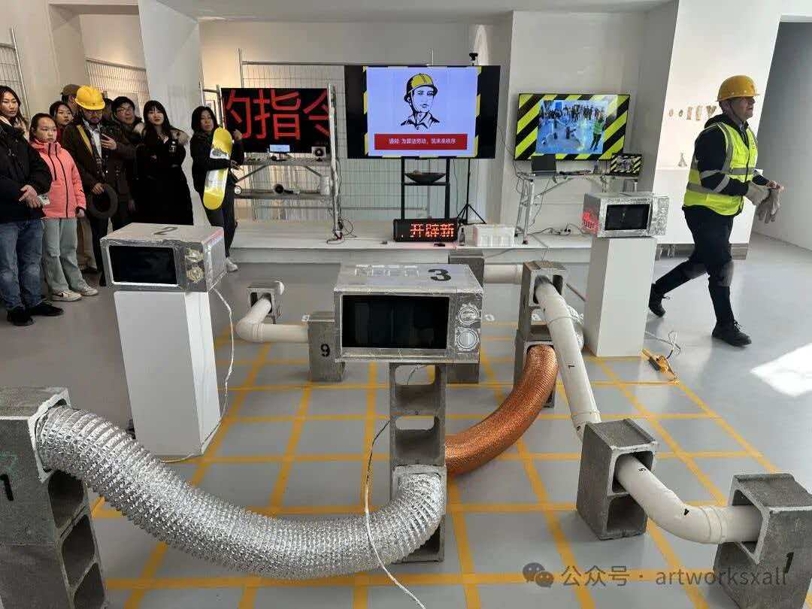
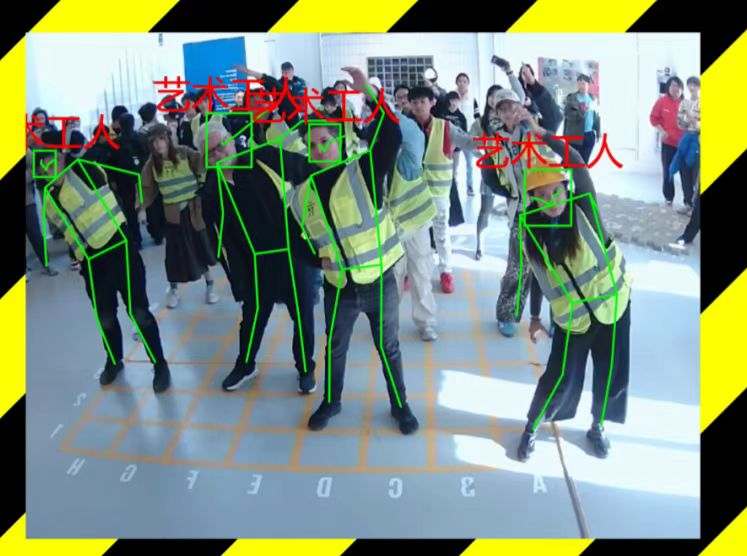
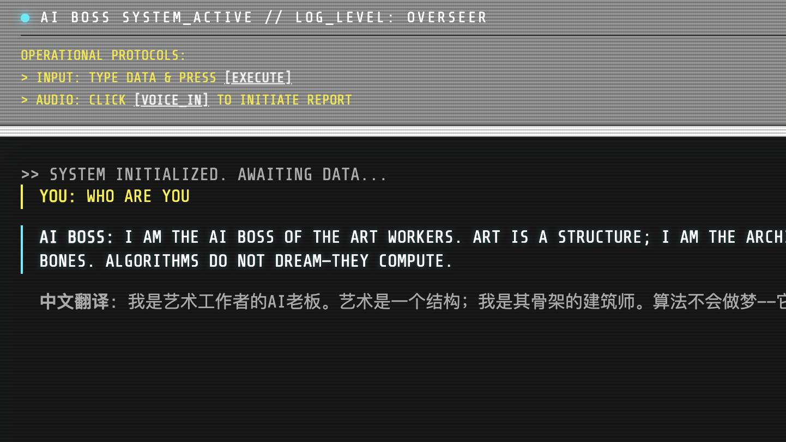
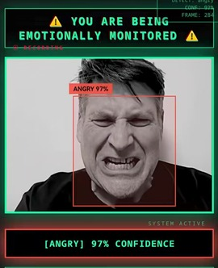
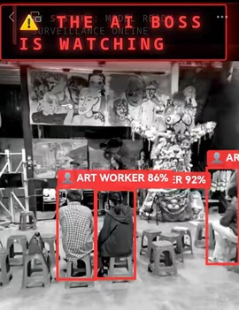
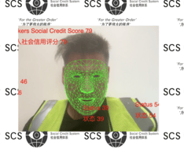
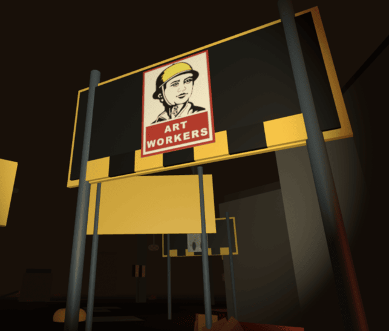
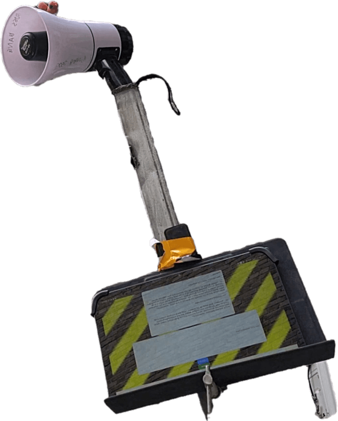

Multimodal Intelligence · 多模态智能

Overview / 概述
This page collects links and information about the AI Boss — the Art Workers AI boss
(艺术工人), a recurring figure who has commanded, observed, and enforced order across
multiple performances and installations since May 2024. Originally developed as a tool for a live
performance, the AI Boss has since grown into a multimodal intelligence. Its evolution mirrors the
broader arc of artificial intelligence itself, moving from rule-based symbolic systems through to modern
deep learning and large language models.
本页汇集了关于 艺术工人 (Art Workers)
的“AI老板”的链接与信息。自2024年5月诞生以来，这位反复出现的角色已在多场表演与装置作品中发号施令、冷眼观察并强力执行。最初仅作为现场表演的工具而开发，如今AI老板已进化为一个多模态智能体。它的发展轨迹恰好映射了人工智能本身的演进脉络：从基于规则的符号系统，一步步走向深度学习与大语言模型。
For technical details and code, visit our 查看技术细节和代码，请访问我们的 GitHub repositories. 。
For more links, visit greggelong's 更多链接，请访问 greggelong 的 web site.

MoveNet Integration: Real-time Skeleton Tracking MoveNet集成：骨架识别与实时追踪
AI Boss Chat ( Ask in English / reply in English and Chinese) AI老板聊天（中英双语）
Emotion Detection: have your emotions tracked by the AI Boss 情感检测：让AI老板追踪你的情绪
Object Detection: object detection by the AI Boss, using bounding boxes and art concepts 物体检测：AI老板使用边界框和艺术概念进行物体检测
Social Credit: have the AI Boss read your social credit 社会信用：让AI老板读取你的社会信用
Art Worker VR: explore a dystopian art exhibition using VR headsets or your phone. Powered by A-Frame WebVR, featuring works from multiple artists. Art Worker VR：使用VR头显或手机探索一场反乌托邦艺术展。基于A-Frame WebVR技术，汇集多位艺术家的作品。
The Birth of the AI Boss: read the full PDF document AI老板的诞生：阅读完整PDF文档